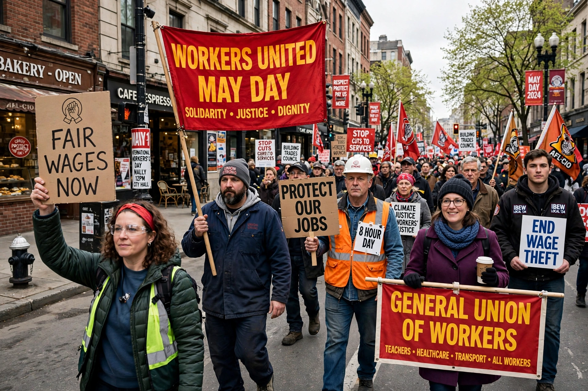

| Trade union | |
|---|---|
| Also called | Labor union (US/Canada); trade union (UK/Commonwealth) |
| Activity | Collective bargaining, worker representation |
| First unions | 18th–19th centuries, Britain |
| Global body | International Trade Union Confederation (ITUC) |
A trade union (British English) or labor union (American English), often simply called a union, is an organisation of workers intent on maintaining or improving the conditions of their employment, such as attaining better wages and benefits, improving working conditions, improving safety standards, establishing complaint procedures, developing rules governing the status of employees (promotions, just-cause terminations) and protecting and increasing the bargaining power of workers.
Unions typically bargain collectively with employers through representatives elected by the membership, negotiating written agreements (collective bargaining agreements) on pay, hours and conditions; if negotiations fail they may call strikes, in which workers withdraw their labour. Unions are usually organised by workplace ("locals"), industry (industrial unions) or craft, and federated into national centres such as the AFL–CIO in the United States, the TUC in Britain, and the DGB in Germany. Many unions also provide legal aid, training, and political lobbying; in several countries they are formally linked to labour or social-democratic parties.
Modern trade unionism emerged in Britain during the Industrial Revolution, surviving periods of illegality under the Combination Acts (1799–1824) and episodes such as the Tolpuddle Martyrs' case (1834). Unionism spread with industrialisation: the Knights of Labor (1869) and the American Federation of Labor (1886) in the US, legal recognition under laws such as the US National Labor Relations Act (1935), and mass industrial unions in the 1930s (Congress of Industrial Organizations). Union density peaked in many Western countries in the mid-20th century and has since declined sharply in the private sector (about 6% in the US), while remaining high in the Nordic countries under the "Ghent system" linking unemployment insurance to union membership. Unions played central roles in labour history worldwide, from Poland's Solidarność (1980), instrumental in ending communist rule, to South Africa's COSATU in the anti-apartheid struggle.